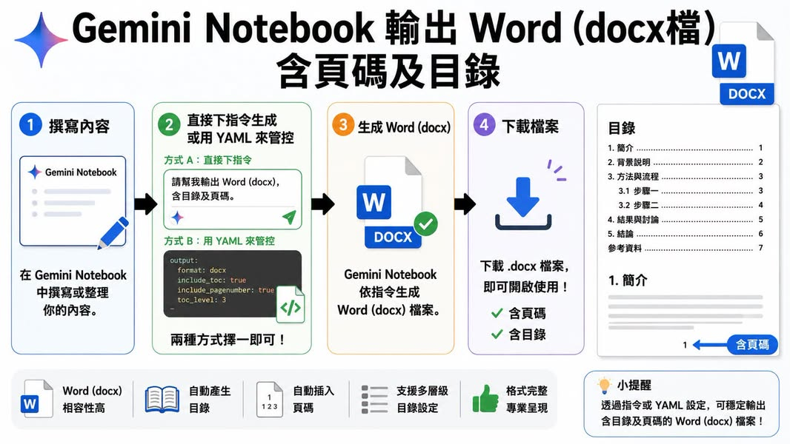

可見資訊
貼文標題為：
「AI 不是讓 Word 基本功消失，而是把『學習順序』反過來了」
貼文文字說明，傳統 Word 教學通常先從大綱模式開始，逐步理解標題階層、分節、頁碼、目錄與文件結構，再完成正式文件。作者主張，使用 Gemini Notebook 後，可以先讓 AI 產出已包含目錄、頁碼與完整階層的文件，再回頭理解文件結構。
配圖展示以下流程：
- 在 Gemini Notebook 中撰寫或整理內容。
- 直接指令或 YAML 控制輸出格式。
- 產生 Word
.docx。 - 下載後開啟使用。
圖中的 YAML 示意包含：
``yaml format: docx include_toc: true include_pagenumber: true toc_level: 3 ``
教學上的意義
這種方法把 Word 從「先學介面操作」改成「先觀察成品，再拆解結構」。它可能適合用於：
• 讓學生先觀察標題階層、目錄與頁碼的成品效果。 • 將 AI 生成文件作為格式分析教材。 • 比較 AI 產生的文件與人工調整後的差異。 • 引導學生理解文件結構，而不是只背誦按鈕位置。
但 AI 產出文件不代表學生已經理解 Word。教學仍應要求學生檢查樣式、分節、目錄更新、頁碼連續性、無障礙結構與內容正確性。
資訊查核
| 主張 | 結果 | 證據與限制 |
|---|---|---|
| 貼文主題是以 Gemini Notebook 改變 Word 教學順序 | 已確認 | Facebook OG title、description 與配圖一致支持此主題。 |
| 配圖展示 Gemini Notebook 產生 Word docx、目錄與頁碼 | 已確認為圖片可見內容 | 只能證明配圖呈現此流程，不等於已獨立驗證產品目前對所有帳號提供該功能。 |
| YAML 欄位可控制 docx、目錄、頁碼與目錄層級 | 未能獨立驗證 | 欄位出現在貼文配圖；尚未取得 Google 官方文件逐項確認這些欄位是正式公開介面。 |
| 這個流程適用所有 Gemini Notebook 使用者 | 無法確認 | 功能可能受產品版本、地區、帳號、介面更新與實驗功能影響。 |
| AI 會讓 Word 基本功消失 | 不支持／屬推論 | 貼文標題本身否定此結論；文件結構、格式檢查與編輯能力仍需要人工理解。 |
來源證據
原始 Facebook OG metadata 與配圖已保存；公開文章只包含不含作者個資的內容摘要、流程圖與查核限制。
- 原始文字封存：
/opt/data/user-notes/knowledge-base/source-archive/public/2026-08-10-facebook-word-ai-learning.txt - 原始圖片封存：
/opt/data/user-notes/knowledge-base/source-archive/public/2026-08-10-facebook-word-ai-learning-original.png - 公開證據圖：
/opt/data/user-notes/knowledge-base/assets/public/source-images/2026-08-10-facebook-word-ai-learning-cover.jpg - 擷取時間：2026-08-10
- 隱私處理：未取得作者姓名與留言資料；公開圖片未見明顯個資。
限制
- Facebook 頁面出現登入遮罩，未取得完整正文、留言、作者或絕對發布日期。
- OG description 在「完整階層的……」處截斷，後續原文無法確認。
- 尚未以實際 Gemini Notebook 帳號執行 docx 匯出測試。
- YAML 欄位是配圖示意，不應直接當成已確認的官方 API 或穩定功能。
- 產生 Word 文件可能仍需人工校對內容、格式、引用、頁碼與目錄。